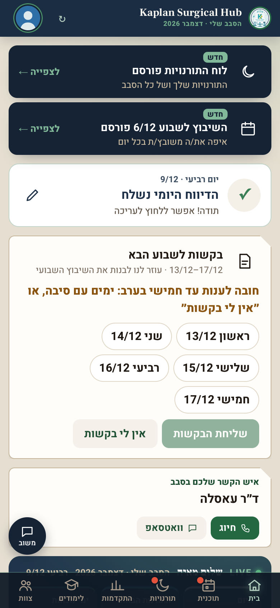
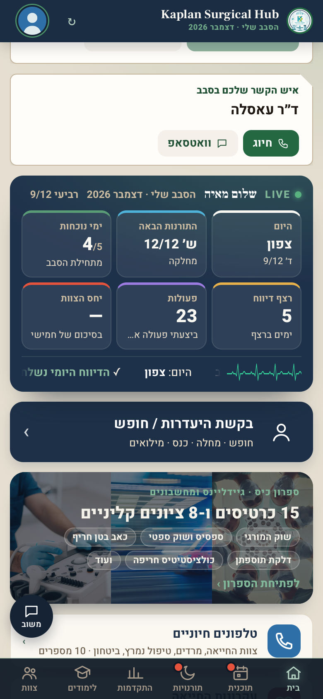
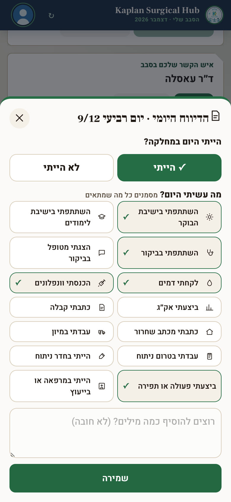

אחרי ההרשמה מקבלים קישור אישי. הוא שלכם בלבד: לא מעבירים אותו הלאה.
פותחים אותו בטלפון ושומרים במסך הבית (בבית יש כפתור "📲 לשמור את האפליקציה במסך הבית" עם הסבר לאייפון ולאנדרואיד). מאז נכנסים בלחיצה, עם Face ID, כמו כל הרופאים במערך.
מעלים תמונת פרופיל. סלפי ברור מספיק: הצוות מזהה אתכם לפיה בלוחות ובשיבוץ.
לפני ה-1 בחודש הבית סופר לאחור לתחילת הסבב, ויש שאלון פתיחה קצר על המיומנויות שלכם.
2מסך הבית
ביתתוכניתתורנויותהתקדמותלימודיםצוות
פס "חדש" מופיע כשפורסם לכם לוח תורנויות או שיבוץ שבועי. לחיצה פותחת אותו.
הכפתור הגדול: הדיווח היומי של היום.
בקשות לשבוע הבא: בוחרים ימים ולכל יום סיבה, או "אין לי בקשות". ברביעי ובחמישי זה חובה.
איש הקשר שלכם בסבב, עם חיוג ווואטסאפ.
למטה: ספרון הכיס, טלפונים חיוניים, עקרונות החייאה, נהלים בקצרה, הצוות שלכם היום והשבוע שלכם.
רענון: הכפתור ↻ למעלה.

הבית

ממשיכים לגלול
3⭐ הדיווח היומי · 30 שניות
בכל יום עבודה, א׳ עד ה׳, עד 16:00. אחרי 16:00 הכפתור אדום.
"הייתי היום במחלקה?" ואז מסמנים מה עשיתם ושומרים.
אחרי תורנות או ביום היעדרות זה כבר מסומן לבד.
שכחתם יום? אפשר להשלים עד 5 ימים אחורה.

הדיווח היומי
💚 למה זה בשבילכם: מפת המיומנויות שלכם מתמלאת מהדיווחים, ואנחנו רואים מה חסר לכם (חדר ניתוח? פרוצדורות?) ודואגים לזה.
4⭐ יום חמישי · סיכום שבועי
באותו כפתור כמו הדיווח היומי, רק ביום חמישי.
ארבעה דירוגים: שיפור קליני, פרוצדורות, יחס הצוות והעשרת ידע. ועוד משפט אם רוצים.
בחמישי האחרון של החודש: סיכום הסבב כולו.
5תוכנית שבועית
איפה אתם בכל יום, הישיבות, המטלות (✓ בוצע) והתורנויות.
מה קורה במערך באותו יום: מי בביקור, מי במיון ומה בחדרי הניתוח.
"תצוגה מקדימה לכל השבוע": כל השבוע במסך אחד, לרוחב.